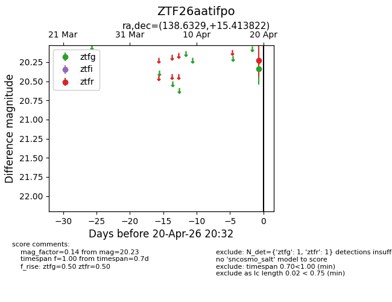
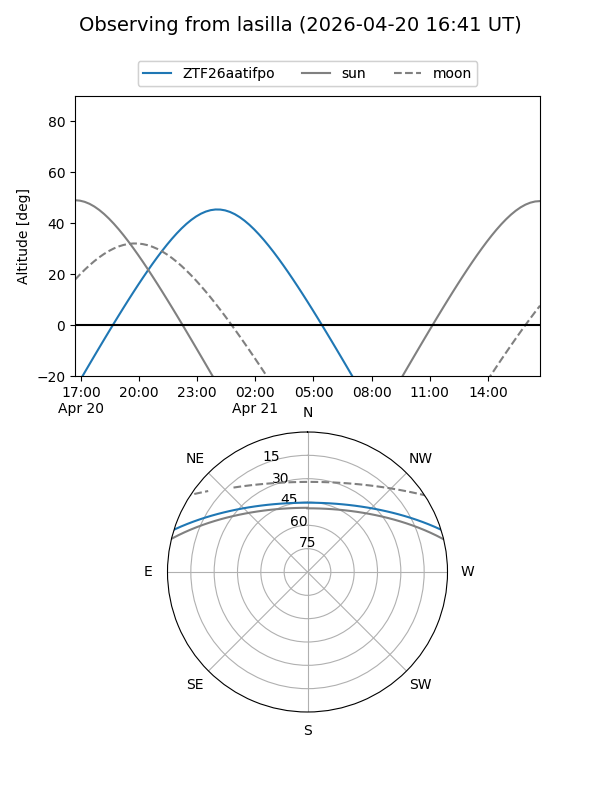
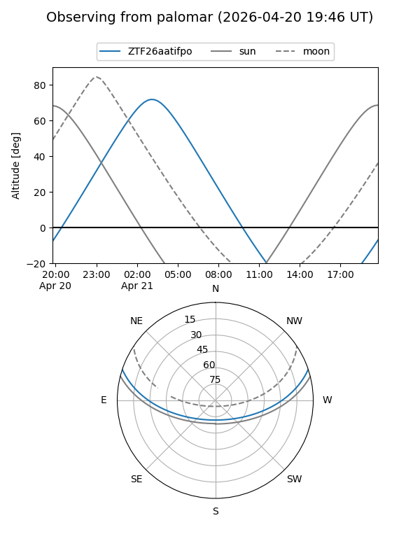

ZTF26aatifpo
Target ZTF26aatifpo at 2026-04-20 20:42
Aliases and brokers:
FINK: link
Lasair: link
ALeRCE: link
alt names
ZTF26aatifpo (ztf,fink_ztf)
Coordinates:
equatorial (ra, dec) = 138.6329,+15.41382
equatorial (HMS+DMS) = 09:14:31.90,+15:24:49.76
galactic (l, b) = (214.4277,+38.51742)
Flags:
Photometry:
last ztfg=20.34, ztfr=20.23
1 ztfg, 1 ztfr detections
Lightcurve

Visibility


Additional plots